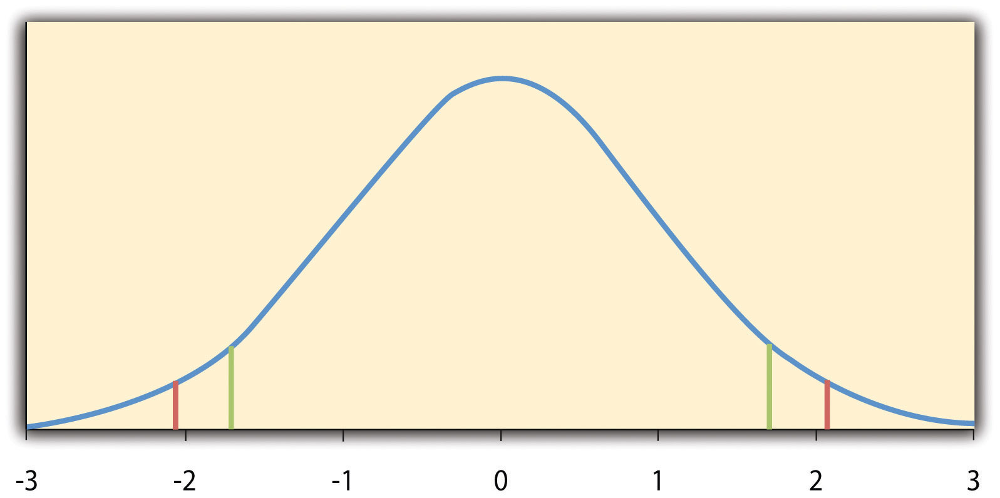
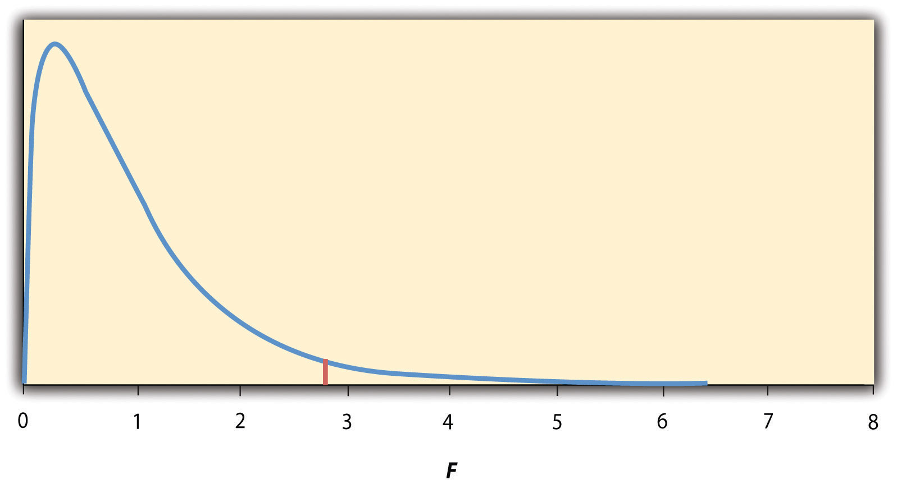

Recall that Matias Mehl and his colleagues, in their study of sex differences in talkativeness, found that the women in their sample spoke a mean of 16,215 words per day and the men a mean of 15,669 words per day (Mehl, Vazire, Ramirez-Esparza, Slatcher, & Pennebaker, 2007).Mehl, M. R., Vazire, S., Ramirez-Esparza, N., Slatcher, R. B., & Pennebaker, J. W. (2007). Are women really more talkative than men? Science, 317, 82. But despite this sex difference in their sample, they concluded that there was no evidence of a sex difference in talkativeness in the population. Recall also that Allen Kanner and his colleagues, in their study of the relationship between daily hassles and symptoms, found a correlation of +.60 in their sample (Kanner, Coyne, Schaefer, & Lazarus, 1981).Kanner, A. D., Coyne, J. C., Schaefer, C., & Lazarus, R. S. (1981). Comparison of two modes of stress measurement: Daily hassles and uplifts versus major life events. Journal of Behavioral Medicine, 4, 1–39. But they concluded that this means there is a relationship between hassles and symptoms in the population. This raises the question of how researchers can say whether their sample result reflects something that is true of the population.
The answer to this question is that they use a set of techniques called inferential statistics, which is what this chapter is about. We focus, in particular, on null hypothesis testing, the most common approach to inferential statistics in psychological research. We begin with a conceptual overview of null hypothesis testing, including its purpose and basic logic. Then we look at several null hypothesis testing techniques for drawing conclusions about differences between means and about correlations between quantitative variables. Finally, we consider a few other important ideas related to null hypothesis testing, including some that can be helpful in planning new studies and interpreting results. We also look at some long-standing criticisms of null hypothesis testing and some ways of dealing with these criticisms.
As we have seen, psychological research typically involves measuring one or more variables for a sample and computing descriptive statistics for that sample. In general, however, the researcher’s goal is not to draw conclusions about that sample but to draw conclusions about the population that the sample was selected from. Thus researchers must use sample statistics to draw conclusions about the corresponding values in the population. These corresponding values in the population are called parametersA numerical summary (e.g., mean, standard deviation) of a population. A numerical summary of a sample is called a “statistic.”. Imagine, for example, that a researcher measures the number of depressive symptoms exhibited by each of 50 clinically depressed adults and computes the mean number of symptoms. The researcher probably wants to use this sample statistic (the mean number of symptoms for the sample) to draw conclusions about the corresponding population parameter (the mean number of symptoms for clinically depressed adults).
Unfortunately, sample statistics are not perfect estimates of their corresponding population parameters. This is because there is a certain amount of random variability in any statistic from sample to sample. The mean number of depressive symptoms might be 8.73 in one sample of clinically depressed adults, 6.45 in a second sample, and 9.44 in a third—even though these samples are selected randomly from the same population. Similarly, the correlation (Pearson’s r) between two variables might be +.24 in one sample, −.04 in a second sample, and +.15 in a third—again, even though these samples are selected randomly from the same population. This random variability in a statistic from sample to sample is called sampling errorRandom variation in a statistic from sample to sample.. (Note that the term error here refers to random variability and does not imply that anyone has made a mistake. No one “commits a sampling error.”)
One implication of this is that when there is a statistical relationship in a sample, it is not always clear that there is a statistical relationship in the population. A small difference between two group means in a sample might indicate that there is a small difference between the two group means in the population. But it could also be that there is no difference between the means in the population and that the difference in the sample is just a matter of sampling error. Similarly, a Pearson’s r value of −.29 in a sample might mean that there is a negative relationship in the population. But it could also be that there is no relationship in the population and that the relationship in the sample is just a matter of sampling error.
In fact, any statistical relationship in a sample can be interpreted in two ways:
The purpose of null hypothesis testing is simply to help researchers decide between these two interpretations.
Null hypothesis testingA formal approach to deciding whether a sample relationship is due to chance (the null hypothesis) or reflects a real relationship in the population (the alternative hypothesis). is a formal approach to deciding between two interpretations of a statistical relationship in a sample. One interpretation is called the null hypothesisThe idea that there is no statistical relationship between two variables in the population and that any relationship in a sample is due to chance. Often abbreviated H0. (often symbolized H0 and read as “H-naught”). This is the idea that there is no relationship in the population and that the relationship in the sample reflects only sampling error. Informally, the null hypothesis is that the sample relationship “occurred by chance.” The other interpretation is called the alternative hypothesisThe idea that there is a statistical relationship between two variables in the population and that any relationship in a sample reflects that real relationship. Often abbreviated H1. (often symbolized as H1). This is the idea that there is a relationship in the population and that the relationship in the sample reflects this relationship in the population.
Again, every statistical relationship in a sample can be interpreted in either of these two ways: It might have occurred by chance, or it might reflect a relationship in the population. So researchers need a way to decide between them. Although there are many specific null hypothesis testing techniques, they are all based on the same general logic. The steps are as follows:
Following this logic, we can begin to understand why Mehl and his colleagues concluded that there is no difference in talkativeness between women and men in the population. In essence, they asked the following question: “If there were no difference in the population, how likely is it that we would find a small difference of d = 0.06 in our sample?” Their answer to this question was that this sample relationship would be fairly likely if the null hypothesis were true. Therefore, they retained the null hypothesis—concluding that there is no evidence of a sex difference in the population. We can also see why Kanner and his colleagues concluded that there is a correlation between hassles and symptoms in the population. They asked, “If the null hypothesis were true, how likely is it that we would find a strong correlation of +.60 in our sample?” Their answer to this question was that this sample relationship would be fairly unlikely if the null hypothesis were true. Therefore, they rejected the null hypothesis in favor of the alternative hypothesis—concluding that there is a positive correlation between these variables in the population.
A crucial step in null hypothesis testing is finding the likelihood of the sample result if the null hypothesis were true. This probability is called the p valueIn null hypothesis testing, the probability of a sample result at least as extreme as the one obtained if the null hypothesis were true.. A low p value means that the sample result would be unlikely if the null hypothesis were true and leads to the rejection of the null hypothesis. A high p value means that the sample result would be likely if the null hypothesis were true and leads to the retention of the null hypothesis. But how low must the p value be before the sample result is considered unlikely enough to reject the null hypothesis? In null hypothesis testing, this criterion is called α (alpha)In null hypothesis testing, the criterion for deciding that a p value is low enough to reject the null hypothesis. In psychological research, it is almost always set to .05. and is almost always set to .05. If there is less than a 5% chance of a result as extreme as the sample result if the null hypothesis were true, then the null hypothesis is rejected. When this happens, the result is said to be statistically significantUsed to describe a result for which the null hypothesis has been rejected.. If there is greater than a 5% chance of a result as extreme as the sample result when the null hypothesis is true, then the null hypothesis is retained. This does not necessarily mean that the researcher accepts the null hypothesis as true—only that there is not currently enough evidence to conclude that it is true. Researchers often use the expression “fail to reject the null hypothesis” rather than “retain the null hypothesis,” but they never use the expression “accept the null hypothesis.”
The p value is one of the most misunderstood quantities in psychological research (Cohen, 1994).Cohen, J. (1994). The world is round: p < .05. American Psychologist, 49, 997–1003. Even professional researchers misinterpret it, and it is not unusual for such misinterpretations to appear in statistics textbooks!
The most common misinterpretation is that the p value is the probability that the null hypothesis is true—that the sample result occurred by chance. For example, a misguided researcher might say that because the p value is .02, there is only a 2% chance that the result is due to chance and a 98% chance that it reflects a real relationship in the population. But this is incorrect. The p value is really the probability of a result at least as extreme as the sample result if the null hypothesis were true. So a p value of .02 means that if the null hypothesis were true, a sample result this extreme would occur only 2% of the time.
You can avoid this misunderstanding by remembering that the p value is not the probability that any particular hypothesis is true or false. Instead, it is the probability of obtaining the sample result if the null hypothesis were true.
Recall that null hypothesis testing involves answering the question, “If the null hypothesis were true, what is the probability of a sample result as extreme as this one?” In other words, “What is the p value?” It can be helpful to see that the answer to this question depends on just two considerations: the strength of the relationship and the size of the sample. Specifically, the stronger the sample relationship and the larger the sample, the less likely the result would be if the null hypothesis were true. That is, the lower the p value. This should make sense. Imagine a study in which a sample of 500 women is compared with a sample of 500 men in terms of some psychological characteristic, and Cohen’s d is a strong 0.50. If there were really no sex difference in the population, then a result this strong based on such a large sample should seem highly unlikely. Now imagine a similar study in which a sample of three women is compared with a sample of three men, and Cohen’s d is a weak 0.10. If there were no sex difference in the population, then a relationship this weak based on such a small sample should seem likely. And this is precisely why the null hypothesis would be rejected in the first example and retained in the second.
Of course, sometimes the result can be weak and the sample large, or the result can be strong and the sample small. In these cases, the two considerations trade off against each other so that a weak result can be statistically significant if the sample is large enough and a strong relationship can be statistically significant even if the sample is small. Table 13.1 "How Relationship Strength and Sample Size Combine to Determine Whether a Result Is Statistically Significant" shows roughly how relationship strength and sample size combine to determine whether a sample result is statistically significant. The columns of the table represent the three levels of relationship strength: weak, medium, and strong. The rows represent four sample sizes that can be considered small, medium, large, and extra large in the context of psychological research. Thus each cell in the table represents a combination of relationship strength and sample size. If a cell contains the word Yes, then this combination would be statistically significant for both Cohen’s d and Pearson’s r. If it contains the word No, then it would not be statistically significant for either. There is one cell where the decision for d and r would be different and another where it might be different depending on some additional considerations, which are discussed in Section 13.2 "Some Basic Null Hypothesis Tests"
Table 13.1 How Relationship Strength and Sample Size Combine to Determine Whether a Result Is Statistically Significant
| Relationship strength | |||
|---|---|---|---|
| Sample Size | Weak | Medium | Strong |
| Small (N = 20) | No | No |
d = Maybe r = Yes |
| Medium (N = 50) | No | Yes | Yes |
| Large (N = 100) |
d = Yes r = No |
Yes | Yes |
| Extra large (N = 500) | Yes | Yes | Yes |
Although Table 13.1 "How Relationship Strength and Sample Size Combine to Determine Whether a Result Is Statistically Significant" provides only a rough guideline, it shows very clearly that weak relationships based on medium or small samples are never statistically significant and that strong relationships based on medium or larger samples are always statistically significant. If you keep this in mind, you will often know whether a result is statistically significant based on the descriptive statistics alone. It is extremely useful to be able to develop this kind of intuitive judgment. One reason is that it allows you to develop expectations about how your formal null hypothesis tests are going to come out, which in turn allows you to detect problems in your analyses. For example, if your sample relationship is strong and your sample is medium, then you would expect to reject the null hypothesis. If for some reason your formal null hypothesis test indicates otherwise, then you need to double-check your computations and interpretations. A second reason is that the ability to make this kind of intuitive judgment is an indication that you understand the basic logic of this approach in addition to being able to do the computations.
Table 13.1 "How Relationship Strength and Sample Size Combine to Determine Whether a Result Is Statistically Significant" illustrates another extremely important point. A statistically significant result is not necessarily a strong one. Even a very weak result can be statistically significant if it is based on a large enough sample. This is closely related to Janet Shibley Hyde’s argument about sex differences (Hyde, 2007).Hyde, J. S. (2007). New directions in the study of gender similarities and differences. Current Directions in Psychological Science, 16, 259–263. The differences between women and men in mathematical problem solving and leadership ability are statistically significant. But the word significant can cause people to interpret these differences as strong and important—perhaps even important enough to influence the college courses they take or even who they vote for. As we have seen, however, these statistically significant differences are actually quite weak—perhaps even “trivial.”
This is why it is important to distinguish between the statistical significance of a result and the practical significance of that result. Practical significanceThe importance of a research result in some real-world context. Research results can be statistically significant without having any practical significance. In clinical practice, practical significance is called “clinical significance.” refers to the importance or usefulness of the result in some real-world context. Many sex differences are statistically significant—and may even be interesting for purely scientific reasons—but they are not practically significant. In clinical practice, this same concept is often referred to as “clinical significance.” For example, a study on a new treatment for social phobia might show that it produces a statistically significant positive effect. Yet this effect still might not be strong enough to justify the time, effort, and other costs of putting it into practice—especially if easier and cheaper treatments that work almost as well already exist. Although statistically significant, this result would be said to lack practical or clinical significance.
Practice: Use Table 13.1 "How Relationship Strength and Sample Size Combine to Determine Whether a Result Is Statistically Significant" to decide whether each of the following results is statistically significant.
In this section, we look at several common null hypothesis testing procedures. The emphasis here is on providing enough information to allow you to conduct and interpret the most basic versions. In most cases, the online statistical analysis tools mentioned in Chapter 12 "Descriptive Statistics" will handle the computations—as will programs such as Microsoft Excel and SPSS.
As we have seen throughout this book, many studies in psychology focus on the difference between two means. The most common null hypothesis test for this type of statistical relationship is the t testA family of null hypothesis tests used to compare two means.. In this section, we look at three types of t tests that are used for slightly different research designs: the one-sample t test, the dependent-samples t test, and the independent-samples t test.
The one-sample t testA null hypothesis test used to compare one sample mean with a hypothetical population mean that provides an interesting standard of comparison. is used to compare a sample mean (M) with a hypothetical population mean (μ0) that provides some interesting standard of comparison. The null hypothesis is that the mean for the population (µ) is equal to the hypothetical population mean: μ = μ0. The alternative hypothesis is that the mean for the population is different from the hypothetical population mean: μ ≠ μ0. To decide between these two hypotheses, we need to find the probability of obtaining the sample mean (or one more extreme) if the null hypothesis were true. But finding this p value requires first computing a test statistic called t. (A test statisticIn null hypothesis testing, a statistic such as t or F that is computed only to help find the p value for the sample result. is a statistic that is computed only to help find the p value.) The formula for t is as follows:
Again, M is the sample mean and µ0 is the hypothetical population mean of interest. SD is the sample standard deviation and N is the sample size.
The reason the t statistic (or any test statistic) is useful is that we know how it is distributed when the null hypothesis is true. As shown in Figure 13.1 "Distribution of ", this distribution is unimodal and symmetrical, and it has a mean of 0. Its precise shape depends on a statistical concept called the degrees of freedom, which for a one-sample t test is N − 1. (There are 24 degrees of freedom for the distribution shown in Figure 13.1 "Distribution of ".) The important point is that knowing this distribution makes it possible to find the p value for any t score. Consider, for example, a t score of +1.50 based on a sample of 25. The probability of a t score at least this extreme is given by the proportion of t scores in the distribution that are at least this extreme. For now, let us define extreme as being far from zero in either direction. Thus the p value is the proportion of t scores that are +1.50 or above or that are −1.50 or below—a value that turns out to be .14.
Figure 13.1 Distribution of t Scores (With 24 Degrees of Freedom) When the Null Hypothesis Is True
The red vertical lines represent the two-tailed critical values, and the green vertical lines the one-tailed critical values when α = .05.
Fortunately, we do not have to deal directly with the distribution of t scores. If we were to enter our sample data and hypothetical mean of interest into one of the online statistical tools in Chapter 12 "Descriptive Statistics" or into a program like SPSS (Excel does not have a one-sample t test function), the output would include both the t score and the p value. At this point, the rest of the procedure is simple. If p is less than .05, we reject the null hypothesis and conclude that the population mean differs from the hypothetical mean of interest. If p is greater than .05, we retain the null hypothesis and conclude that there is not enough evidence to say that the population mean differs from the hypothetical mean of interest. (Again, technically, we conclude only that we do not have enough evidence to conclude that it does differ.)
If we were to compute the t score by hand, we could use a table like Table 13.2 "Table of Critical Values of " to make the decision. This table does not provide actual p values. Instead, it provides the critical valuesIn null hypothesis testing, the value or values of a test statistic that correspond to a p value of .05 and therefore serve as a cutoff for deciding to reject the null hypothesis. of t for different degrees of freedom (df) when α is .05. For now, let us focus on the two-tailed critical values in the last column of the table. Each of these values should be interpreted as a pair of values: one positive and one negative. For example, the two-tailed critical values when there are 24 degrees of freedom are +2.064 and −2.064. These are represented by the red vertical lines in Figure 13.1 "Distribution of ". The idea is that any t score below the lower critical value (the left-hand red line in Figure 13.1 "Distribution of ") is in the lowest 2.5% of the distribution, while any t score above the upper critical value (the right-hand red line) is in the highest 2.5% of the distribution. This means that any t score beyond the critical value in either direction is in the most extreme 5% of t scores when the null hypothesis is true and therefore has a p value less than .05. Thus if the t score we compute is beyond the critical value in either direction, then we reject the null hypothesis. If the t score we compute is between the upper and lower critical values, then we retain the null hypothesis.
Table 13.2 Table of Critical Values of t When α = .05
| Critical value | ||
|---|---|---|
| df | One-tailed | Two-tailed |
| 3 | 2.353 | 3.182 |
| 4 | 2.132 | 2.776 |
| 5 | 2.015 | 2.571 |
| 6 | 1.943 | 2.447 |
| 7 | 1.895 | 2.365 |
| 8 | 1.860 | 2.306 |
| 9 | 1.833 | 2.262 |
| 10 | 1.812 | 2.228 |
| 11 | 1.796 | 2.201 |
| 12 | 1.782 | 2.179 |
| 13 | 1.771 | 2.160 |
| 14 | 1.761 | 2.145 |
| 15 | 1.753 | 2.131 |
| 16 | 1.746 | 2.120 |
| 17 | 1.740 | 2.110 |
| 18 | 1.734 | 2.101 |
| 19 | 1.729 | 2.093 |
| 20 | 1.725 | 2.086 |
| 21 | 1.721 | 2.080 |
| 22 | 1.717 | 2.074 |
| 23 | 1.714 | 2.069 |
| 24 | 1.711 | 2.064 |
| 25 | 1.708 | 2.060 |
| 30 | 1.697 | 2.042 |
| 35 | 1.690 | 2.030 |
| 40 | 1.684 | 2.021 |
| 45 | 1.679 | 2.014 |
| 50 | 1.676 | 2.009 |
| 60 | 1.671 | 2.000 |
| 70 | 1.667 | 1.994 |
| 80 | 1.664 | 1.990 |
| 90 | 1.662 | 1.987 |
| 100 | 1.660 | 1.984 |
Thus far, we have considered what is called a two-tailed testA null hypothesis test (e.g., a t test or test of Pearson’s r) in which the null hypothesis is rejected if the sample result is extreme in either direction. Used when the researcher does not have a strong expectation about the direction of the relationship., where we reject the null hypothesis if the t score for the sample is extreme in either direction. This makes sense when we believe that the sample mean might differ from the hypothetical population mean but we do not have good reason to expect the difference to go in a particular direction. But it is also possible to do a one-tailed testA null hypothesis test (e.g., a t test or test of Pearson’s r) in which the null hypothesis is rejected only if the sample result is extreme in one direction specified before the data are collected. Used when the researcher has a strong expectation about the direction of the relationship., where we reject the null hypothesis only if the t score for the sample is extreme in one direction that we specify before collecting the data. This makes sense when we have good reason to expect the sample mean will differ from the hypothetical population mean in a particular direction.
Here is how it works. Each one-tailed critical value in Table 13.2 "Table of Critical Values of " can again be interpreted as a pair of values: one positive and one negative. A t score below the lower critical value is in the lowest 5% of the distribution, and a t score above the upper critical value is in the highest 5% of the distribution. For 24 degrees of freedom, these values are −1.711 and +1.711. (These are represented by the green vertical lines in Figure 13.1 "Distribution of ".) However, for a one-tailed test, we must decide before collecting data whether we expect the sample mean to be lower than the hypothetical population mean, in which case we would use only the lower critical value, or we expect the sample mean to be greater than the hypothetical population mean, in which case we would use only the upper critical value. Notice that we still reject the null hypothesis when the t score for our sample is in the most extreme 5% of the t scores we would expect if the null hypothesis were true—so α remains at .05. We have simply redefined extreme to refer only to one tail of the distribution. The advantage of the one-tailed test is that critical values are less extreme. If the sample mean differs from the hypothetical population mean in the expected direction, then we have a better chance of rejecting the null hypothesis. The disadvantage is that if the sample mean differs from the hypothetical population mean in the unexpected direction, then there is no chance at all of rejecting the null hypothesis.
Imagine that a health psychologist is interested in the accuracy of college students’ estimates of the number of calories in a chocolate chip cookie. He shows the cookie to a sample of 10 students and asks each one to estimate the number of calories in it. Because the actual number of calories in the cookie is 250, this is the hypothetical population mean of interest (µ0). The null hypothesis is that the mean estimate for the population (μ) is 250. Because he has no real sense of whether the students will underestimate or overestimate the number of calories, he decides to do a two-tailed test. Now imagine further that the participants’ actual estimates are as follows:
250, 280, 200, 150, 175, 200, 200, 220, 180, 250.The mean estimate for the sample (M) is 212.00 calories and the standard deviation (SD) is 39.17. The health psychologist can now compute the t score for his sample:
If he enters the data into one of the online analysis tools or uses SPSS, it would also tell him that the two-tailed p value for this t score (with 10 − 1 = 9 degrees of freedom) is .013. Because this is less than .05, the health psychologist would reject the null hypothesis and conclude that college students tend to underestimate the number of calories in a chocolate chip cookie. If he computes the t score by hand, he could look at Table 13.2 "Table of Critical Values of " and see that the critical value of t for a two-tailed test with 9 degrees of freedom is ±2.262. The fact that his t score was more extreme than this critical value would tell him that his p value is less than .05 and that he should reject the null hypothesis.
Finally, if this researcher had gone into this study with good reason to expect that college students underestimate the number of calories, then he could have done a one-tailed test instead of a two-tailed test. The only thing this would change is the critical value, which would be −1.833. This slightly less extreme value would make it a bit easier to reject the null hypothesis. However, if it turned out that college students overestimate the number of calories—no matter how much they overestimate it—the researcher would not have been able to reject the null hypothesis.
The dependent-samples t testA null hypothesis test used to compare two means for one sample measured at two different times or under two different conditions—as in a pretest-posttest or within-subjects design. (sometimes called the paired-samples t test) is used to compare two means for the same sample tested at two different times or under two different conditions. This makes it appropriate for pretest-posttest designs or within-subjects experiments. The null hypothesis is that the means at the two times or under the two conditions are the same in the population. The alternative hypothesis is that they are not the same. This test can also be one-tailed if the researcher has good reason to expect the difference goes in a particular direction.
It helps to think of the dependent-samples t test as a special case of the one-sample t test. However, the first step in the dependent-samples t test is to reduce the two scores for each participant to a single difference scoreThe difference between an individual’s score at one time or under one condition and that individual’s score at a second time or under a second condition. The dependent-samples t test is in essence a one-sample t test on a set of difference scores. by taking the difference between them. At this point, the dependent-samples t test becomes a one-sample t test on the difference scores. The hypothetical population mean (µ0) of interest is 0 because this is what the mean difference score would be if there were no difference on average between the two times or two conditions. We can now think of the null hypothesis as being that the mean difference score in the population is 0 (µ0 = 0) and the alternative hypothesis as being that the mean difference score in the population is not 0 (µ0 ≠ 0).
Imagine that the health psychologist now knows that people tend to underestimate the number of calories in junk food and has developed a short training program to improve their estimates. To test the effectiveness of this program, he conducts a pretest-posttest study in which 10 participants estimate the number of calories in a chocolate chip cookie before the training program and then again afterward. Because he expects the program to increase the participants’ estimates, he decides to do a one-tailed test. Now imagine further that the pretest estimates are
230, 250, 280, 175, 150, 200, 180, 210, 220, 190and that the posttest estimates (for the same participants in the same order) are
250, 260, 250, 200, 160, 200, 200, 180, 230, 240.The difference scores, then, are as follows:
+20, +10, −30, +25, +10, 0, +20, −30, +10, +50.Note that it does not matter whether the first set of scores is subtracted from the second or the second from the first as long as it is done the same way for all participants. In this example, it makes sense to subtract the pretest estimates from the posttest estimates so that positive difference scores mean that the estimates went up after the training and negative difference scores mean the estimates went down.
The mean of the difference scores is 8.50 with a standard deviation of 27.27. The health psychologist can now compute the t score for his sample as follows:
If he enters the data into one of the online analysis tools or uses Excel or SPSS, it would tell him that the one-tailed p value for this t score (again with 10 − 1 = 9 degrees of freedom) is .148. Because this is greater than .05, he would retain the null hypothesis and conclude that the training program does not increase people’s calorie estimates. If he were to compute the t score by hand, he could look at Table 13.2 "Table of Critical Values of " and see that the critical value of t for a one-tailed test with 9 degrees of freedom is +1.833. (It is positive this time because he was expecting a positive mean difference score.) The fact that his t score was less extreme than this critical value would tell him that his p value is greater than .05 and that he should fail to reject the null hypothesis.
The independent-samples t testA null hypothesis test used to compare means for two separate samples—as in a between-subjects design. is used to compare the means of two separate samples (M1 and M2). The two samples might have been tested under different conditions in a between-subjects experiment, or they could be preexisting groups in a correlational design (e.g., women and men, extroverts and introverts). The null hypothesis is that the means of the two populations are the same: µ1 = µ2. The alternative hypothesis is that they are not the same: µ1 ≠ µ2. Again, the test can be one-tailed if the researcher has good reason to expect the difference goes in a particular direction.
The t statistic here is a bit more complicated because it must take into account two sample means, two standard deviations, and two sample sizes. The formula is as follows:
Notice that this formula includes squared standard deviations (the variances) that appear inside the square root symbol. Also, lowercase n1 and n2 refer to the sample sizes in the two groups or condition (as opposed to capital N, which generally refers to the total sample size). The only additional thing to know here is that there are N − 2 degrees of freedom for the independent-samples t test.
Now the health psychologist wants to compare the calorie estimates of people who regularly eat junk food with the estimates of people who rarely eat junk food. He believes the difference could come out in either direction so he decides to conduct a two-tailed test. He collects data from a sample of eight participants who eat junk food regularly and seven participants who rarely eat junk food. The data are as follows:
Junk food eaters: 180, 220, 150, 85, 200, 170, 150, 190
Non–junk food eaters: 200, 240, 190, 175, 200, 300, 240
The mean for the junk food eaters is 220.71 with a standard deviation of 41.23. The mean for the non–junk food eaters is 168.12 with a standard deviation of 42.66. He can now compute his t score as follows:
If he enters the data into one of the online analysis tools or uses Excel or SPSS, it would tell him that the two-tailed p value for this t score (with 15 − 2 = 13 degrees of freedom) is .015. Because this is less than .05, the health psychologist would reject the null hypothesis and conclude that people who eat junk food regularly make lower calorie estimates than people who eat it rarely. If he were to compute the t score by hand, he could look at Table 13.2 "Table of Critical Values of " and see that the critical value of t for a two-tailed test with 13 degrees of freedom is ±2.160. The fact that his t score was more extreme than this critical value would tell him that his p value is less than .05 and that he should fail to retain the null hypothesis.
When there are more than two groups or condition means to be compared, the most common null hypothesis test is the analysis of variance (ANOVA)A null hypothesis test used to compare means for more than two groups or conditions.. In this section, we look primarily at the one-way ANOVAA null hypothesis test used to compare more than two means in a between-subjects design with one independent variable., which is used for between-subjects designs with a single independent variable. We then briefly consider some other versions of the ANOVA that are used for within-subjects and factorial research designs.
The one-way ANOVA is used to compare the means of more than two samples (M1, M2…MG) in a between-subjects design. The null hypothesis is that all the means are equal in the population: µ1= µ2 =…= µG. The alternative hypothesis is that not all the means in the population are equal.
The test statistic for the ANOVA is called F. It is a ratio of two estimates of the population variance based on the sample data. One estimate of the population variance is called the mean squares between groups (MSB)In an analysis of variance, an estimate for the population variance based only on differences among the group or condition means. and is based on the differences among the sample means. The other is called the mean squares within groups (MSW)In an analysis of variance, an estimate of the population variance based on the variability within each group or condition. and is based on the differences among the scores within each group. The F statistic is the ratio of the MSB to the MSW and can therefore be expressed as follows:
Again, the reason that F is useful is that we know how it is distributed when the null hypothesis is true. As shown in Figure 13.2 "Distribution of the ", this distribution is unimodal and positively skewed with values that cluster around 1. The precise shape of the distribution depends on both the number of groups and the sample size, and there is a degrees of freedom value associated with each of these. The between-groups degrees of freedom is the number of groups minus one: dfB = (G − 1). The within-groups degrees of freedom is the total sample size minus the number of groups: dfW = N − G. Again, knowing the distribution of F when the null hypothesis is true allows us to find the p value.
Figure 13.2 Distribution of the F Ratio With 2 and 37 Degrees of Freedom When the Null Hypothesis Is True
The red vertical line represents the critical value when α is .05.
The online tools in Chapter 12 "Descriptive Statistics" and statistical software such as Excel and SPSS will compute F and find the p value. If p is less than .05, then we reject the null hypothesis and conclude that there are differences among the group means in the population. If p is greater than .05, then we retain the null hypothesis and conclude that there is not enough evidence to say that there are differences. In the unlikely event that we would compute F by hand, we can use a table of critical values like Table 13.3 "Table of Critical Values of " to make the decision. The idea is that any F ratio greater than the critical value has a p value of less than .05. Thus if the F ratio we compute is beyond the critical value, then we reject the null hypothesis. If the F ratio we compute is less than the critical value, then we retain the null hypothesis.
Table 13.3 Table of Critical Values of F When α = .05
| dfB | |||
|---|---|---|---|
| dfW | 2 | 3 | 4 |
| 8 | 4.459 | 4.066 | 3.838 |
| 9 | 4.256 | 3.863 | 3.633 |
| 10 | 4.103 | 3.708 | 3.478 |
| 11 | 3.982 | 3.587 | 3.357 |
| 12 | 3.885 | 3.490 | 3.259 |
| 13 | 3.806 | 3.411 | 3.179 |
| 14 | 3.739 | 3.344 | 3.112 |
| 15 | 3.682 | 3.287 | 3.056 |
| 16 | 3.634 | 3.239 | 3.007 |
| 17 | 3.592 | 3.197 | 2.965 |
| 18 | 3.555 | 3.160 | 2.928 |
| 19 | 3.522 | 3.127 | 2.895 |
| 20 | 3.493 | 3.098 | 2.866 |
| 21 | 3.467 | 3.072 | 2.840 |
| 22 | 3.443 | 3.049 | 2.817 |
| 23 | 3.422 | 3.028 | 2.796 |
| 24 | 3.403 | 3.009 | 2.776 |
| 25 | 3.385 | 2.991 | 2.759 |
| 30 | 3.316 | 2.922 | 2.690 |
| 35 | 3.267 | 2.874 | 2.641 |
| 40 | 3.232 | 2.839 | 2.606 |
| 45 | 3.204 | 2.812 | 2.579 |
| 50 | 3.183 | 2.790 | 2.557 |
| 55 | 3.165 | 2.773 | 2.540 |
| 60 | 3.150 | 2.758 | 2.525 |
| 65 | 3.138 | 2.746 | 2.513 |
| 70 | 3.128 | 2.736 | 2.503 |
| 75 | 3.119 | 2.727 | 2.494 |
| 80 | 3.111 | 2.719 | 2.486 |
| 85 | 3.104 | 2.712 | 2.479 |
| 90 | 3.098 | 2.706 | 2.473 |
| 95 | 3.092 | 2.700 | 2.467 |
| 100 | 3.087 | 2.696 | 2.463 |
Imagine that the health psychologist wants to compare the calorie estimates of psychology majors, nutrition majors, and professional dieticians. He collects the following data:
Psych majors: 200, 180, 220, 160, 150, 200, 190, 200 Nutrition majors: 190, 220, 200, 230, 160, 150, 200, 210, 195 Dieticians: 220, 250, 240, 275, 250, 230, 200, 240The means are 187.50 (SD = 23.14), 195.00 (SD = 27.77), and 238.13 (SD = 22.35), respectively. So it appears that dieticians made substantially more accurate estimates on average. The researcher would almost certainly enter these data into a program such as Excel or SPSS, which would compute F for him and find the p value. Table 13.4 "Typical One-Way ANOVA Output From Excel" shows the output of the one-way ANOVA function in Excel for these data. This is referred to as an ANOVA table. It shows that MSB is 5,971.88, MSW is 602.23, and their ratio, F, is 9.92. The p value is .0009. Because this is below .05, the researcher would reject the null hypothesis and conclude that the mean calorie estimates for the three groups are not the same in the population. Notice that the ANOVA table also includes the “sum of squares” (SS) for between groups and for within groups. These values are computed on the way to finding MSB and MSW but are not typically reported by the researcher. Finally, if the researcher were to compute the F ratio by hand, he could look at Table 13.3 "Table of Critical Values of " and see that the critical value of F with 2 and 21 degrees of freedom is 3.467 (the same value in Table 13.4 "Typical One-Way ANOVA Output From Excel" under Fcrit). The fact that his t score was more extreme than this critical value would tell him that his p value is less than .05 and that he should reject the null hypothesis.
Table 13.4 Typical One-Way ANOVA Output From Excel
| ANOVA | ||||||
|---|---|---|---|---|---|---|
| Source of variation | SS | df | MS | F | p-value | Fcrit |
| Between groups | 11,943.75 | 2 | 5,971.875 | 9.916234 | 0.000928 | 3.4668 |
| Within groups | 12,646.88 | 21 | 602.2321 | |||
| Total | 24,590.63 | 23 | ||||
When we reject the null hypothesis in a one-way ANOVA, we conclude that the group means are not all the same in the population. But this can indicate different things. With three groups, it can indicate that all three means are significantly different from each other. Or it can indicate that one of the means is significantly different from the other two, but the other two are not significantly different from each other. It could be, for example, that the mean calorie estimates of psychology majors, nutrition majors, and dieticians are all significantly different from each other. Or it could be that the mean for dieticians is significantly different from the means for psychology and nutrition majors, but the means for psychology and nutrition majors are not significantly different from each other. For this reason, statistically significant one-way ANOVA results are typically followed up with a series of post hoc comparisonsStatistical comparison of selected pairs of group or condition means following a statistically significant ANOVA result. Usually done using one of several modified t-test procedures. of selected pairs of group means to determine which are different from which others.
One approach to post hoc comparisons would be to conduct a series of independent-samples t tests comparing each group mean to each of the other group means. But there is a problem with this approach. In general, if we conduct a t test when the null hypothesis is true, we have a 5% chance of mistakenly rejecting the null hypothesis (see Section 13.3 "Additional Considerations" for more on such Type I errors). If we conduct several t tests when the null hypothesis is true, the chance of mistakenly rejecting at least one null hypothesis increases with each test we conduct. Thus researchers do not usually make post hoc comparisons using standard t tests because there is too great a chance that they will mistakenly reject at least one null hypothesis. Instead, they use one of several modified t test procedures—among them the Bonferonni procedure, Fisher’s least significant difference (LSD) test, and Tukey’s honestly significant difference (HSD) test. The details of these approaches are beyond the scope of this book, but it is important to understand their purpose. It is to keep the risk of mistakenly rejecting a true null hypothesis to an acceptable level (close to 5%).
Recall that the one-way ANOVA is appropriate for between-subjects designs in which the means being compared come from separate groups of participants. It is not appropriate for within-subjects designs in which the means being compared come from the same participants tested under different conditions or at different times. This requires a slightly different approach, called the repeated-measures ANOVAA null hypothesis test used to compare means for one sample at more than two times or under more than two conditions in a within-subjects design.. The basics of the repeated-measures ANOVA are the same as for the one-way ANOVA. The main difference is that measuring the dependent variable multiple times for each participant allows for a more refined measure of MSW. Imagine, for example, that the dependent variable in a study is a measure of reaction time. Some participants will be faster or slower than others because of stable individual differences in their nervous systems, muscles, and other factors. In a between-subjects design, these stable individual differences would simply add to the variability within the groups and increase the value of MSW. In a within-subjects design, however, these stable individual differences can be measured and subtracted from the value of MSW. This lower value of MSW means a higher value of F and a more sensitive test.
When more than one independent variable is included in a factorial design, the appropriate approach is the factorial ANOVAA null hypothesis test used to test both main effects and interactions in a factorial design.. Again, the basics of the factorial ANOVA are the same as for the one-way and repeated-measures ANOVAs. The main difference is that it produces an F ratio and p value for each main effect and for each interaction. Returning to our calorie estimation example, imagine that the health psychologist tests the effect of participant major (psychology vs. nutrition) and food type (cookie vs. hamburger) in a factorial design. A factorial ANOVA would produce separate F ratios and p values for the main effect of major, the main effect of food type, and the interaction between major and food. Appropriate modifications must be made depending on whether the design is between subjects, within subjects, or mixed.
For relationships between quantitative variables, where Pearson’s r is used to describe the strength of those relationships, the appropriate null hypothesis test is a test of Pearson’s r. The basic logic is exactly the same as for other null hypothesis tests. In this case, the null hypothesis is that there is no relationship in the population. We can use the Greek lowercase rho (ρ) to represent the relevant parameter: ρ = 0. The alternative hypothesis is that there is a relationship in the population: ρ ≠ 0. As with the t test, this test can be two-tailed if the researcher has no expectation about the direction of the relationship or one-tailed if the researcher expects the relationship to go in a particular direction.
It is possible to use Pearson’s r for the sample to compute a t score with N − 2 degrees of freedom and then to proceed as for a t test. However, because of the way it is computed, Pearson’s r can also be treated as its own test statistic. The online statistical tools and statistical software such as Excel and SPSS generally compute Pearson’s r and provide the p value associated with that value of Pearson’s r. As always, if the p value is less than .05, we reject the null hypothesis and conclude that there is a relationship between the variables in the population. If the p value is greater than .05, we retain the null hypothesis and conclude that there is not enough evidence to say there is a relationship in the population. If we compute Pearson’s r by hand, we can use a table like Table 13.5 "Table of Critical Values of Pearson’s ", which shows the critical values of r for various samples sizes when α is .05. A sample value of Pearson’s r that is more extreme than the critical value is statistically significant.
Table 13.5 Table of Critical Values of Pearson’s r When α = .05
| Critical value of r | ||
|---|---|---|
| N | One-tailed | Two-tailed |
| 5 | .805 | .878 |
| 10 | .549 | .632 |
| 15 | .441 | .514 |
| 20 | .378 | .444 |
| 25 | .337 | .396 |
| 30 | .306 | .361 |
| 35 | .283 | .334 |
| 40 | .264 | .312 |
| 45 | .248 | .294 |
| 50 | .235 | .279 |
| 55 | .224 | .266 |
| 60 | .214 | .254 |
| 65 | .206 | .244 |
| 70 | .198 | .235 |
| 75 | .191 | .227 |
| 80 | .185 | .220 |
| 85 | .180 | .213 |
| 90 | .174 | .207 |
| 95 | .170 | .202 |
| 100 | .165 | .197 |
Imagine that the health psychologist is interested in the correlation between people’s calorie estimates and their weight. He has no expectation about the direction of the relationship, so he decides to conduct a two-tailed test. He computes the correlation for a sample of 22 college students and finds that Pearson’s r is −.21. The statistical software he uses tells him that the p value is .348. It is greater than .05, so he retains the null hypothesis and concludes that there is no relationship between people’s calorie estimates and their weight. If he were to compute Pearson’s r by hand, he could look at Table 13.5 "Table of Critical Values of Pearson’s " and see that the critical value for 22 − 2 = 20 degrees of freedom is .444. The fact that Pearson’s r for the sample is less extreme than this critical value tells him that the p value is greater than .05 and that he should retain the null hypothesis.
In this section, we consider a few other issues related to null hypothesis testing, including some that are useful in planning studies and interpreting results. We even consider some long-standing criticisms of null hypothesis testing, along with some steps that researchers in psychology have taken to address them.
In null hypothesis testing, the researcher tries to draw a reasonable conclusion about the population based on the sample. Unfortunately, this conclusion is not guaranteed to be correct. This is illustrated by Figure 13.3 "Two Types of Correct Decisions and Two Types of Errors in Null Hypothesis Testing". The rows of this table represent the two possible decisions that we can make in null hypothesis testing: to reject or retain the null hypothesis. The columns represent the two possible states of the world: The null hypothesis is false or it is true. The four cells of the table, then, represent the four distinct outcomes of a null hypothesis test. Two of the outcomes—rejecting the null hypothesis when it is false and retaining it when it is true—are correct decisions. The other two—rejecting the null hypothesis when it is true and retaining it when it is false—are errors.
Figure 13.3 Two Types of Correct Decisions and Two Types of Errors in Null Hypothesis Testing

Rejecting the null hypothesis when it is true is called a Type I errorIn null hypothesis testing, rejecting the null hypothesis when it is true.. This means that we have concluded that there is a relationship in the population when in fact there is not. Type I errors occur because even when there is no relationship in the population, sampling error alone will occasionally produce an extreme result. In fact, when the null hypothesis is true and α is .05, we will mistakenly reject the null hypothesis 5% of the time. (This is why α is sometimes referred to as the “Type I error rate.”) Retaining the null hypothesis when it is false is called a Type II errorIn null hypothesis testing, failing to reject the null hypothesis when it is false.. This means that we have concluded that there is no relationship in the population when in fact there is. In practice, Type II errors occur primarily because the research design lacks adequate statistical power to detect the relationship (e.g., the sample is too small). We will have more to say about statistical power shortly.
In principle, it is possible to reduce the chance of a Type I error by setting α to something less than .05. Setting it to .01, for example, would mean that if the null hypothesis is true, then there is only a 1% chance of mistakenly rejecting it. But making it harder to reject true null hypotheses also makes it harder to reject false ones and therefore increases the chance of a Type II error. Similarly, it is possible to reduce the chance of a Type II error by setting α to something greater than .05 (e.g., .10). But making it easier to reject false null hypotheses also makes it easier to reject true ones and therefore increases the chance of a Type I error. This provides some insight into why the convention is to set α to .05. There is some agreement among researchers that level of α keeps the rates of both Type I and Type II errors at acceptable levels.
The possibility of committing Type I and Type II errors has several important implications for interpreting the results of our own and others’ research. One is that we should be cautious about interpreting the results of any individual study because there is a chance that it reflects a Type I or Type II error. This is why researchers consider it important to replicate their studies. Each time researchers replicate a study and find a similar result, they rightly become more confident that the result represents a real phenomenon and not just a Type I or Type II error.
Another issue related to Type I errors is the so-called file drawer problemThe fact that statistically significant results are more likely to be submitted and accepted for publication than nonsignificant results. (Rosenthal, 1979).Rosenthal, R. (1979). The file drawer problem and tolerance for null results. Psychological Bulletin, 83, 638–641. The idea is that when researchers obtain statistically significant results, they tend to submit them for publication, and journal editors and reviewers tend to accept them. But when researchers obtain nonsignificant results, they tend not to submit them for publication, or if they do submit them, journal editors and reviewers tend not to accept them. Researchers end up putting these nonsignificant results away in a file drawer (or nowadays, in a folder on their hard drive). One effect of this is that the published literature probably contains a higher proportion of Type I errors than we might expect on the basis of statistical considerations alone. Even when there is a relationship between two variables in the population, the published research literature is likely to overstate the strength of that relationship. Imagine, for example, that the relationship between two variables in the population is positive but weak (e.g., ρ = +.10). If several researchers conduct studies on this relationship, sampling error is likely to produce results ranging from weak negative relationships (e.g., r = −.10) to moderately strong positive ones (e.g., r = +.40). But because of the file drawer problem, it is likely that only those studies producing moderate to strong positive relationships are published. The result is that the effect reported in the published literature tends to be stronger than it really is in the population.
The file drawer problem is a difficult one because it is a product of the way scientific research has traditionally been conducted and published. One solution might be for journal editors and reviewers to evaluate research submitted for publication without knowing the results of that research. The idea is that if the research question is judged to be interesting and the method judged to be sound, then a nonsignificant result should be just as important and worthy of publication as a significant one. Short of such a radical change in how research is evaluated for publication, researchers can still take pains to keep their nonsignificant results and share them as widely as possible (e.g., at professional conferences). Many scientific disciplines now have journals devoted to publishing nonsignificant results. In psychology, for example, there is the Journal of Articles in Support of the Null Hypothesis (http://www.jasnh.com).
The statistical powerThe probability of rejecting the null hypothesis for a given sample size and expected relationship strength. of a research design is the probability of rejecting the null hypothesis given the sample size and expected relationship strength. For example, the statistical power of a study with 50 participants and an expected Pearson’s r of +.30 in the population is .59. That is, there is a 59% chance of rejecting the null hypothesis if indeed the population correlation is +.30. Statistical power is the complement of the probability of committing a Type II error. So in this example, the probability of committing a Type II error would be 1 − .59 = .41. Clearly, researchers should be interested in the power of their research designs if they want to avoid making Type II errors. In particular, they should make sure their research design has adequate power before collecting data. A common guideline is that a power of .80 is adequate. This means that there is an 80% chance of rejecting the null hypothesis for the expected relationship strength.
The topic of how to compute power for various research designs and null hypothesis tests is beyond the scope of this book. However, there are online tools that allow you to do this by entering your sample size, expected relationship strength, and α level for various hypothesis tests (see “Computing Power Online”). In addition, Table 13.6 "Sample Sizes Needed to Achieve Statistical Power of .80 for Different Expected Relationship Strengths for an Independent-Samples " shows the sample size needed to achieve a power of .80 for weak, medium, and strong relationships for a two-tailed independent-samples t test and for a two-tailed test of Pearson’s r. Notice that this table amplifies the point made earlier about relationship strength, sample size, and statistical significance. In particular, weak relationships require very large samples to provide adequate statistical power.
Table 13.6 Sample Sizes Needed to Achieve Statistical Power of .80 for Different Expected Relationship Strengths for an Independent-Samples t Test and a Test of Pearson’s r
| Null Hypothesis Test | ||
|---|---|---|
| Relationship Strength | Independent-Samples t Test | Test of Pearson’s r |
| Strong (d = .80, r = .50) | 52 | 28 |
| Medium (d = .50, r = .30) | 128 | 84 |
| Weak (d = .20, r = .10) | 788 | 782 |
What should you do if you discover that your research design does not have adequate power? Imagine, for example, that you are conducting a between-subjects experiment with 20 participants in each of two conditions and that you expect a medium difference (d = .50) in the population. The statistical power of this design is only .34. That is, even if there is a medium difference in the population, there is only about a one in three chance of rejecting the null hypothesis and about a two in three chance of committing a Type II error. Given the time and effort involved in conducting the study, this probably seems like an unacceptably low chance of rejecting the null hypothesis and an unacceptably high chance of committing a Type II error.
Given that statistical power depends primarily on relationship strength and sample size, there are essentially two steps you can take to increase statistical power: increase the strength of the relationship or increase the sample size. Increasing the strength of the relationship can sometimes be accomplished by using a stronger manipulation or by more carefully controlling extraneous variables to reduce the amount of noise in the data (e.g., by using a within-subjects design rather than a between-subjects design). The usual strategy, however, is to increase the sample size. For any expected relationship strength, there will always be some sample large enough to achieve adequate power.
The following links are to tools that allow you to compute statistical power for various research designs and null hypothesis tests by entering information about the expected relationship strength, the sample size, and the α level. They also allow you to compute the sample size necessary to achieve your desired level of power (e.g., .80). The first is an online tool. The second is a free downloadable program called G*Power.
Again, null hypothesis testing is the most common approach to inferential statistics in psychology. It is not without its critics, however. In fact, in recent years the criticisms have become so prominent that the American Psychological Association convened a task force to make recommendations about how to deal with them (Wilkinson & Task Force on Statistical Inference, 1999).Wilkinson, L., & Task Force on Statistical Inference. (1999). Statistical methods in psychology journals: Guidelines and explanations. American Psychologist, 54, 594–604. In this section, we consider some of the criticisms and some of the recommendations.
Some criticisms of null hypothesis testing focus on researchers’ misunderstanding of it. We have already seen, for example, that the p value is widely misinterpreted as the probability that the null hypothesis is true. (Recall that it is really the probability of the sample result if the null hypothesis were true.) A closely related misinterpretation is that 1 − p is the probability of replicating a statistically significant result. In one study, 60% of a sample of professional researchers thought that a p value of .01—for an independent-samples t test with 20 participants in each sample—meant there was a 99% chance of replicating the statistically significant result (Oakes, 1986).Oakes, M. (1986). Statistical inference: A commentary for the social and behavioral sciences. Chichester, UK: Wiley. Our earlier discussion of power should make it clear that this is far too optimistic. As Table 13.5 "Table of Critical Values of Pearson’s " shows, even if there were a large difference between means in the population, it would require 26 participants per sample to achieve a power of .80. And the program G*Power shows that it would require 59 participants per sample to achieve a power of .99.
Another set of criticisms focuses on the logic of null hypothesis testing. To many, the strict convention of rejecting the null hypothesis when p is less than .05 and retaining it when p is greater than .05 makes little sense. This criticism does not have to do with the specific value of .05 but with the idea that there should be any rigid dividing line between results that are considered significant and results that are not. Imagine two studies on the same statistical relationship with similar sample sizes. One has a p value of .04 and the other a p value of .06. Although the two studies have produced essentially the same result, the former is likely to be considered interesting and worthy of publication and the latter simply not significant. This convention is likely to prevent good research from being published and to contribute to the file drawer problem.
Yet another set of criticisms focus on the idea that null hypothesis testing—even when understood and carried out correctly—is simply not very informative. Recall that the null hypothesis is that there is no relationship between variables in the population (e.g., Cohen’s d or Pearson’s r is precisely 0). So to reject the null hypothesis is simply to say that there is some nonzero relationship in the population. But this is not really saying very much. Imagine if chemistry could tell us only that there is some relationship between the temperature of a gas and its volume—as opposed to providing a precise equation to describe that relationship. Some critics even argue that the relationship between two variables in the population is never precisely 0 if it is carried out to enough decimal places. In other words, the null hypothesis is never literally true. So rejecting it does not tell us anything we did not already know!
To be fair, many researchers have come to the defense of null hypothesis testing. One of them, Robert Abelson, has argued that when it is correctly understood and carried out, null hypothesis testing does serve an important purpose (Abelson, 1995).Abelson, R. P. (1995). Statistics as principled argument. Mahwah, NJ: Erlbaum. Especially when dealing with new phenomena, it gives researchers a principled way to convince others that their results should not be dismissed as mere chance occurrences.
Even those who defend null hypothesis testing recognize many of the problems with it. But what should be done? Some suggestions now appear in the Publication Manual. One is that each null hypothesis test should be accompanied by an effect size measure such as Cohen’s d or Pearson’s r. By doing so, the researcher provides an estimate of how strong the relationship in the population is—not just whether there is one or not. (Remember that the p value cannot substitute as a measure of relationship strength because it also depends on the sample size. Even a very weak result can be statistically significant if the sample is large enough.)
Another suggestion is to use confidence intervals rather than null hypothesis tests. A confidence intervalA range of values computed in such a way that some specified percentage of the time (usually 95%) the population parameter of interest will lie within that range. around a statistic is a range of values that is computed in such a way that some percentage of the time (usually 95%) the population parameter will lie within that range. For example, a sample of 20 college students might have a mean calorie estimate for a chocolate chip cookie of 200 with a 95% confidence interval of 160 to 240. In other words, there is a very good chance that the mean calorie estimate for the population of college students lies between 160 and 240. Advocates of confidence intervals argue that they are much easier to interpret than null hypothesis tests. Another advantage of confidence intervals is that they provide the information necessary to do null hypothesis tests should anyone want to. In this example, the sample mean of 200 is significantly different at the .05 level from any hypothetical population mean that lies outside the confidence interval. So the confidence interval of 160 to 240 tells us that the sample mean is statistically significantly different from a hypothetical population mean of 250.
Finally, there are more radical solutions to the problems of null hypothesis testing that involve using very different approaches to inferential statistics. Bayesian statisticsAn alternative approach to inferential statistics in which the researcher specifies the probability that the null hypothesis and important alternative hypotheses are true before conducting a study, conducts the study, and then computes revised probabilities based on the data., for example, is an approach in which the researcher specifies the probability that the null hypothesis and any important alternative hypotheses are true before conducting the study, conducts the study, and then updates the probabilities based on the data. It is too early to say whether this approach will become common in psychological research. For now, null hypothesis testing—supported by effect size measures and confidence intervals—remains the dominant approach.
Discussion: A researcher compares the effectiveness of two forms of psychotherapy for social phobia using an independent-samples t test.